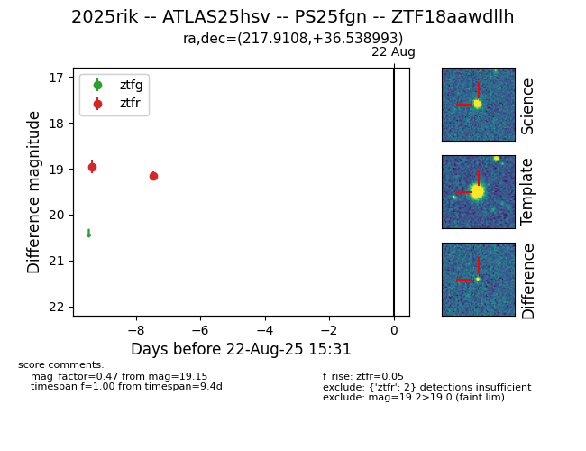

Target 2025rik at 2025-08-21 09:16, see:
FINK: fink-portal.org/ZTF18aawdllh
Lasair: lasair-ztf.lsst.ac.uk/objects/ZTF18aawdllh
ALeRCE: alerce.online/object/ZTF18aawdllh
TNS: wis-tns.org/object/2025rik
YSE: ziggy.ucolick.org/yse/transient_detail/2025rik
alt names
ZTF18aawdllh (ztf,alerce)
2025rik (tns,yse)
ATLAS25hsv (atlas)
PS25fgn (panstarrs)
coordinates:
equatorial (ra, dec) = (217.9108,+36.53899)
galactic (l, b) = (63.1282,+66.82033)
photometry
last ztfr=19.15
2 ztfr detections
